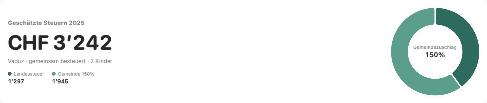
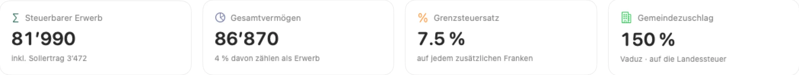

Belege lesen
Texterkennung direkt auf dem Mac. Erkennt Lohnausweise, Prämienbestätigungen, Vorsorgeausweise, Bankbelege, Arztrechnungen und Spenden.
Die Mac-App für Familien und Private in Liechtenstein: Belege hineinziehen, alle Abzüge finden, Landes- und Gemeindesteuer auf den Franken genau berechnen – und Feld für Feld in eTax FL übertragen. Ihre Daten bleiben auf Ihrem Mac – auf Wunsch verschlüsselt in der Cloud in der Schweiz.


Die Steuererklärung ist jedes Jahr dasselbe: Belege suchen, Formulare verstehen, Abzüge vergessen. Steuerhilfe.li nimmt Ihnen genau diese Arbeit ab.
Texterkennung direkt auf dem Mac. Erkennt Lohnausweise, Prämienbestätigungen, Vorsorgeausweise, Bankbelege, Arztrechnungen und Spenden.
Tarif nach Art. 19 Steuergesetz für Alleinstehende, Alleinerziehende und Ehepaare – plus der Gemeindezuschlag Ihrer Gemeinde.
Vermögen per 1. Januar, Hausrat und Fahrzeuge mit Freibetrag und Abschreibung – 4 % davon werden zum Erwerb gerechnet.
Von Gemeinde zu Gemeinde nach der Tabelle der Steuerverwaltung, oder nach Kilometern, wenn Wohn- oder Arbeitsort im Ausland liegt.
Pensionskassen-Einkauf, Gewinnungskosten über der Pauschale, Krankheitskosten ohne Selbstbehalt: jeder Tipp neu durchgerechnet.
Jedes Feld mit Ziffer und Feldnummer wie in der Steuererklärung. Betrag anklicken, in eTax FL einfügen, abhaken.
Kinderabzug, Versicherungsabzüge je nach Alter der Kinder, Ausbildungskosten und Unterhaltsbeiträge – alles berücksichtigt.
Die komplette Berechnung für Ihre Unterlagen – Vermögen, Erwerb, Abzüge, Landes- und Gemeindesteuer.
Daten und Belege verschlüsselt auf Servern in der Schweiz. Auf einem weiteren Mac mit Ihrer E-Mail anmelden – und alles ist wieder da.
Ziehen Sie um oder wohnen Sie auf der anderen Rheinseite? Oben in der App auf St.Gallen umstellen – mit E-Tax SG und Bundessteuer.
Alle Bildschirme zeigen eine fiktive Beispielfamilie aus Vaduz.
Jede Eingabe verändert den Betrag sofort. Landessteuer und Gemeindesteuer sind getrennt ausgewiesen, mit dem Zuschlag Ihrer Gemeinde.
Gewinnungskosten mit Fahrkostentabelle, Versicherungsbeiträge mit den gesetzlichen Höchstbeträgen, Krankheitskosten ohne Selbstbehalt: Steuerhilfe.li rechnet jeden Abzug so, wie ihn die Steuerverwaltung rechnet.
Jedes Feld mit Ziffer und Feldnummer wie in der amtlichen Steuererklärung. Betrag anklicken, in eTax FL einfügen, abhaken.
Der Fortschritt führt Sie Schritt für Schritt durch die Steuererklärung – von den Personalien bis zum Vermögen.
Zwei Erwerbseinkommen, zwei Kinder, Wohnung in Miete. Steuerhilfe.li hat die Landes- und Gemeindesteuer 2025 berechnet und den grössten Hebel gefunden.
Fiktives Beispiel. Landes- und Gemeindesteuer (Vaduz, Zuschlag 150 %), Steuerjahr 2025.
Grenzsteuersatz 7.5 %: Jeder abgezogene Franken spart rund 7½ Rappen.
Ohne Anmeldung bleibt alles lokal, geschützt durch FileVault. Steuerhilfe.li funktioniert auch ganz ohne Internet.
In der Vollversion: Daten und Belege werden auf dem Mac verschlüsselt (AES-256) und auf Servern in der Schweiz gesichert.
Kein Passwort: Sie erhalten einen Code per E-Mail. Auf jedem weiteren Mac haben Sie Daten, Belege und Lizenz sofort wieder.
Ihre Angaben werden nie verkauft, ausgewertet oder für Werbung genutzt. Belege werden lokal mit der Texterkennung von macOS gelesen.
Steuerhilfe.li rechnet nach dem Liechtensteiner Steuergesetz und der Wegleitung der Steuerverwaltung – und kennt auch die Steuererklärung des Kantons St.Gallen. Dieselbe App, dieselbe Lizenz.
Testversion kostenlos: alles erfassen, Belege lesen lassen und die Steuern berechnen. Die Vollversion mit Übertragung in eTax FL, PDF-Bericht, allen Spartipps und verschlüsselter Cloud-Sicherung kostet CHF 99 pro Jahr und Haushalt – der Lizenzschlüssel kommt per E-Mail und gilt 12 Monate ab der Aktivierung.
Nein. Steuerhilfe.li bereitet die Steuererklärung vollständig vor und berechnet Landes- und Gemeindesteuer. Eingereicht wird weiterhin mit eTax, dem Programm der Steuerverwaltung. Steuerhilfe.li zeigt Ihnen jedes Feld mit Ziffer und Feldnummer, damit die Übertragung in wenigen Minuten erledigt ist.
Steuerhilfe.li rechnet mit dem Tarif nach Art. 19 Steuergesetz, dem Sollertrag von 4 %, den Abzügen der Wegleitung und den Gemeindezuschlägen aller 11 Gemeinden. Das amtliche Rechenbeispiel der Wegleitung ergibt auf den Franken denselben Betrag. Massgebend bleibt die Veranlagung durch die Steuerverwaltung.
Die App ist zuerst für den Kanton St.Gallen entstanden – gleich über dem Rhein in Sevelen – und heisst deshalb auf dem Mac «Steuerhilfe SG». Heute rechnet dieselbe App auch die Liechtensteiner Steuererklärung – beim ersten Start wählen Sie Liechtenstein, und alles richtet sich danach.
Nein. Steuerhilfe.li ist eine unabhängige App von Lweb in Sevelen. Sie ist weder von der Liechtensteinischen Steuerverwaltung noch vom Kanton St.Gallen herausgegeben oder geprüft.
Auf Ihrem Mac, im geschützten Bereich der App – mit einer täglichen Sicherung, 30 Tage lang. Ohne Anmeldung sendet Steuerhilfe.li keine Daten ins Internet. Mit der Cloud-Sicherung (Vollversion) werden Daten und Belege zusätzlich verschlüsselt auf Servern in der Schweiz gespeichert.
Ja. Als Grenzgängerin oder Grenzgänger versteuern Sie Ihren Lohn in Liechtenstein, wo Sie wohnen. Erfassen Sie den Schweizer Lohnausweis wie jeden anderen; die Fahrkosten rechnet Steuerhilfe.li nach Kilometern, weil der Arbeitsort im Ausland liegt.
Eine Version für iPhone und iPad ist in Vorbereitung. Mit Ihrem Konto haben Sie dann auf allen Geräten dieselben Daten und Belege. Eine Windows-Version ist derzeit nicht geplant.
Die Testversion ist kostenlos: Sie können alles erfassen und sehen Ihren Steuerbetrag. Die Vollversion kostet CHF 99 pro Jahr und Haushalt (12 Monate ab der Aktivierung) und schaltet die Übertragung in eTax FL, den PDF-Bericht, alle Spartipps, den Datenexport und die Cloud-Sicherung frei – für Liechtenstein und St.Gallen.
In Steuerhilfe.li auf «Testversion» klicken und «Lizenz bei Lweb anfragen» wählen – oder direkt an info@lweb.ch schreiben. Sie erhalten einen persönlichen Lizenzschlüssel per E-Mail, den Sie in der App einfügen.